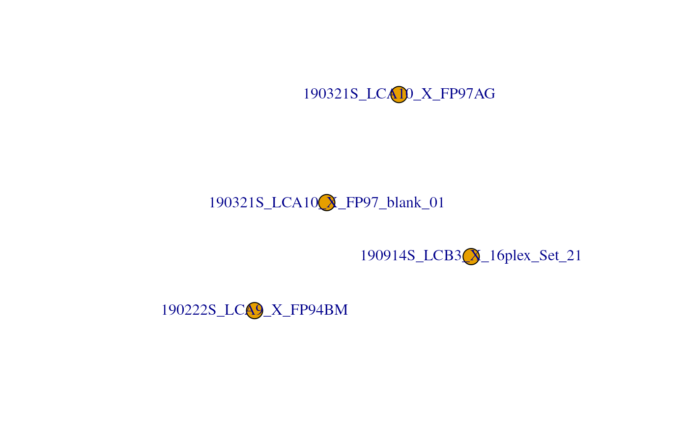
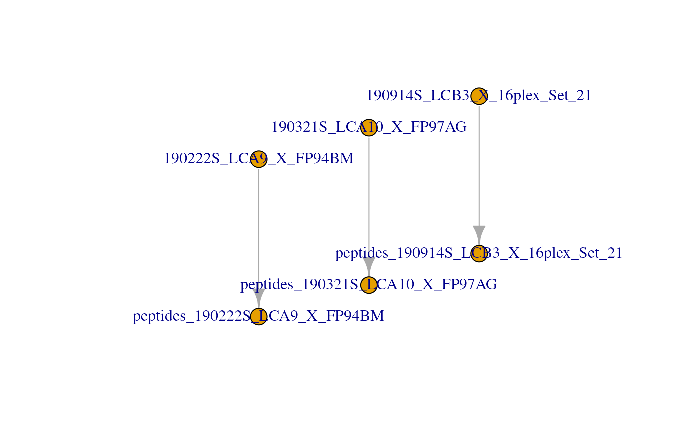
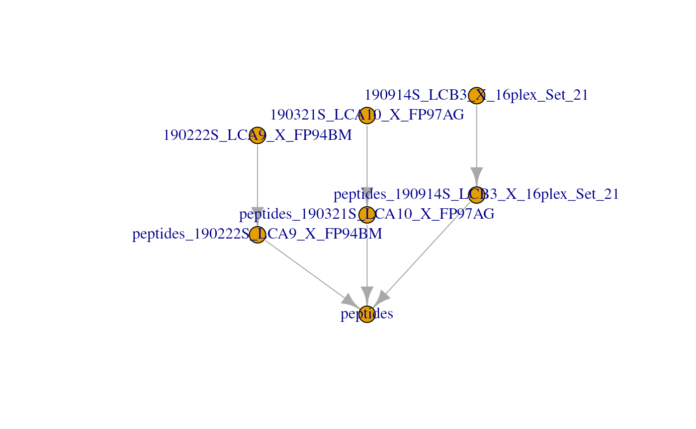
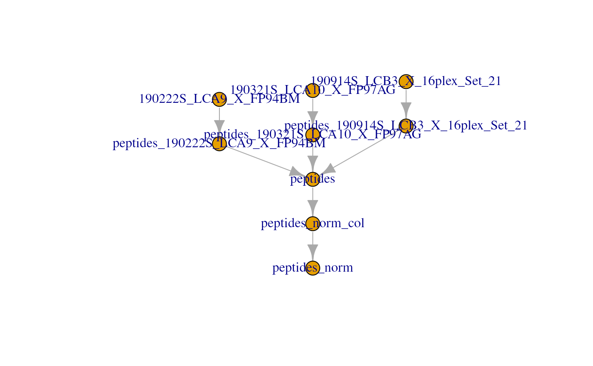
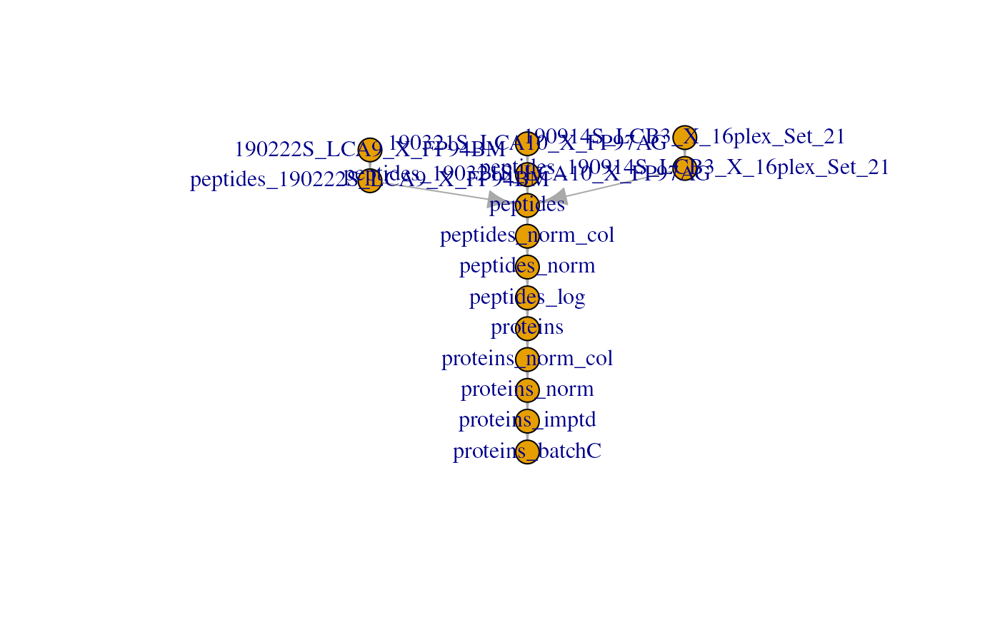
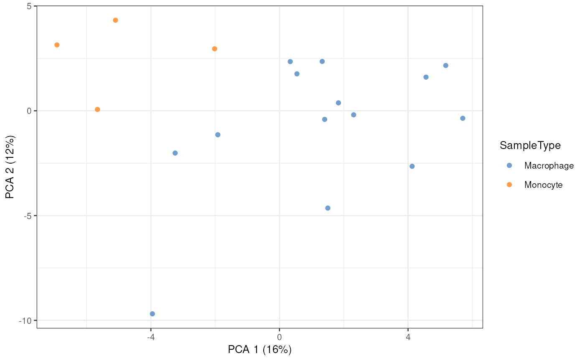
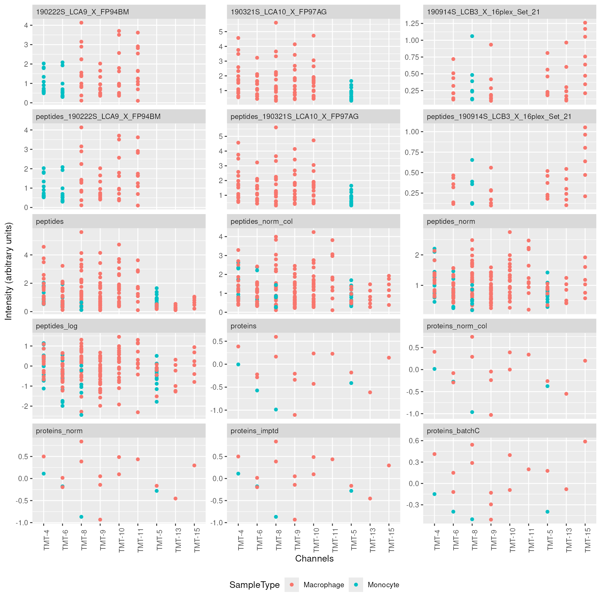

Single Cell Proteomics data processing and analysis
Laurent Gatto
Christophe Vanderaa
31 July 2024
Source:vignettes/scp.Rmd
scp.RmdThe scp package
The scp package is used to process and analyse mass
spectrometry (MS)-based single cell proteomics (SCP) data. The functions
rely on a specific data structure that wraps QFeatures
objects (Gatto and Vanderaa (2023)) around
SingleCellExperiment
objects (Amezquita et al. (2020)). This
data structure could be seen as Matryoshka dolls were the
SingleCellExperiment objects are small dolls contained in
the bigger QFeatures doll.
The SingleCellExperiment class provides a dedicated
framework for single-cell data. The SingleCellExperiment
serves as an interface to many cutting-edge methods for processing,
visualizing and analysis single-cell data. More information about the
SingleCellExperiment class and associated methods can be
found in the OSCA
book.
The QFeatures class is a data framework dedicated to
manipulate and process MS-based quantitative data. It preserves the
relationship between the different levels of information: peptide to
spectrum match (PSM) data, peptide data and protein data. The
QFeatures package also provides an interface to many
utility functions to streamline the processing MS data. More information
about MS data analysis tools can be found in the RforMassSpectrometry
project.

scp relies on SingleCellExperiment and
QFeatures objects.
Before running the vignette we need to load the scp
package.
We also load ggplot2 and dplyr for
convenient data manipulation and plotting.
Before you start
This vignette will guide you through some common steps of mass
spectrometry-based single-cell proteomics (SCP) data analysis. SCP is an
emerging field and further research is required to develop a principled
analysis workflow. Therefore, we do not guarantee that
the steps presented here are the best steps for this type of data
analysis. This vignette performs the steps that were described in the
SCoPE2 landmark paper (Specht et al.
(2021)) and that were reproduced in another work using the
scp package (Vanderaa and Gatto
(2021)). The replication on the full SCoPE2 dataset using
scp is available in this
vignette. We hope to convince the reader that, although the workflow
is probably not optimal, scp has the full potential to
perform standardized and principled data analysis. All functions
presented here are comprehensively documented, highly modular, can
easily be extended with new algorithms. Suggestions, feature requests or
bug reports are warmly welcome. Feel free to open an issue in the GitHub
repository.
This workflow can be applied to any MS-based SCP data. The minimal requirement to follow this workflow is that the data should contain the following information:
-
runCol/Raw.file: field in the feature data and the sample data that gives the names of MS acquisition runs or files. -
quantCols: field in the sample data that links to columns in the quantification data and that allows to link samples to MS channels (more details in another vignette). -
SampleType: field in the sample data that provides the type of sample that is acquired (carrier, reference, single-cell,…). Only needed for multiplexing experiments. -
Potential.contaminant: field in the feature data that marks contaminant peptides. -
Reverse: field in the feature data that marks reverse peptides. -
PIF: field in the feature data that provides spectral purity. -
PEPordart_PEP: field in the feature data that provides peptide posterior error probabilities. -
Modified.sequence: field in the feature data that provides the peptide identifiers. -
Leading.razor.protein: field in the feature data that provides the protein identifiers. - At least one field in the feature data that contains quantification
values. In this case, there are 16 quantification columns named as
Reporter.intensity.followed by an index (1to16).
Each required field will be described more in detail in the corresponding sections. Names can be adapted by the user to more meaningful ones or adapted to other output tables.
Read in SCP data
The first step is to read in the PSM quantification table generated
by, for example, MaxQuant (Tyanova, Temu, and Cox
(2016)). We created a small example data by subsetting the
MaxQuant evidence.txt table provided in the SCoPE2 landmark
paper (Specht et al. (2021)). The
mqScpData table is a typical example of what you would get
after reading in a CSV file using read.csv or
read.table. See ?mqScpData for more
information about the table content.
data("mqScpData")We also provide an example of a sample annotation table that provides
useful information about the samples that are present in the example
data. See ?sampleAnnotation for more information about the
table content.
data("sampleAnnotation")As a note, the example sample data contains 5 different types of
samples (SampleType) that can be found in a TMT-based SCP
data set:
table(sampleAnnotation$SampleType)
#>
#> Blank Carrier Macrophage Monocyte Reference Unused
#> 19 3 20 5 3 14- The carrier channels (
Carrier) contain 200 cell equivalents and are meant to boost the peptide identification rate. - The normalization channels (
Reference) contain 5 cell equivalents and are used to partially correct for between-run variation. - The unused channels (
Unused) are channels that are left empty due to isotopic cross-contamination by the carrier channel. - The negative control channels (
Blank) contain samples that do not contain any cell but are processed as single-cell samples. - The single-cell sample channels contain the single-cell samples of
interest, that are macrophage (
Macrophage) or monocyte (Monocyte).
Using readSCP, we combine both tables in a
QFeatures object formatted as described above.
scp <- readSCP(assayData = mqScpData,
colData = sampleAnnotation,
runCol = "Raw.file",
removeEmptyCols = TRUE)
#> Checking arguments.
#> Loading data as a 'SummarizedExperiment' object.
#> Splitting data in runs.
#> Formatting sample annotations (colData).
#> Formatting data as a 'QFeatures' object.
scp
#> An instance of class QFeatures containing 4 assays:
#> [1] 190222S_LCA9_X_FP94BM: SingleCellExperiment with 395 rows and 11 columns
#> [2] 190321S_LCA10_X_FP97_blank_01: SingleCellExperiment with 109 rows and 11 columns
#> [3] 190321S_LCA10_X_FP97AG: SingleCellExperiment with 487 rows and 11 columns
#> [4] 190914S_LCB3_X_16plex_Set_21: SingleCellExperiment with 370 rows and 16 columnsSee here that the 3 first assays contain 11 columns that correspond to the TMT-11 labels and the last assay contains 16 columns that correspond to the TMT-16 labels.
Important: More details about the usage of
readSCP() and how to read your own data set are provided in
the Load data using readSCP vignette.
Another way to get an overview of the scp object is to plot the
QFeatures object. This will create a graph where each node
is an assay and links between assays are denoted as edges.
plot(scp)
Clean missing data
All single-cell data contain many zeros. The zeros can be biological
zeros or technical zeros and differentiating between the two types is
not a trivial task. To avoid artefacts in downstream steps, we replace
the zeros by the missing value NA. The
zeroIsNA function takes the QFeatures object
and the name(s) or index/indices of the assay(s) to clean and
automatically replaces any zero in the selected quantitative data by
NA.
scp <- zeroIsNA(scp, i = 1:4)Filter PSMs
A common steps in SCP is to filter out low-confidence PSMs. Each PSM
assay contains feature meta-information that are stored in the
rowData of the assays. The QFeatures package
allows to quickly filter the rows of an assay by using these
information. The available variables in the rowData are
listed below for each assay.
rowDataNames(scp)
#> CharacterList of length 4
#> [["190222S_LCA9_X_FP94BM"]] uid Sequence Length ... residual participated
#> [["190321S_LCA10_X_FP97_blank_01"]] uid Sequence ... residual participated
#> [["190321S_LCA10_X_FP97AG"]] uid Sequence Length ... residual participated
#> [["190914S_LCB3_X_16plex_Set_21"]] uid Sequence ... residual participatedFilter features based on feature annotations
Below are some examples of criteria that are used to identify low-confidence. The information is readily available since this was computed by MaxQuant:
- Remove PSMs that are matched to contaminants
- Remove PSMs that are matched to the decoy database
- Keep PSMs that exhibit a high PIF (parental ion fraction), indicative of the purity of a spectrum
We can perform this filtering using the filterFeatures
function from QFeatures. filterFeatures
automatically accesses the feature annotations and selects the rows that
meet the provided condition(s). For instance,
Reverse != "+" keeps the rows for which the
Reverse variable in the rowData is not
"+" (i.e. the PSM is not matched to the decoy
database).
scp <- filterFeatures(scp,
~ Reverse != "+" &
Potential.contaminant != "+" &
!is.na(PIF) & PIF > 0.8)
#> 'Reverse' found in 4 out of 4 assay(s)
#> 'Potential.contaminant' found in 4 out of 4 assay(s)
#> 'PIF' found in 4 out of 4 assay(s)Filter assays based on detected features
To avoid proceeding with failed runs, another interesting filter is
to remove assays with too few features. If a batch contains less than,
for example, 150 features we can then suspect something wrong happened
in that batch and it should be removed. Using dims, we can
query the dimensions (hence the number of features and the number of
samples) of all assays contained in the dataset.
dims(scp)
#> 190222S_LCA9_X_FP94BM 190321S_LCA10_X_FP97_blank_01 190321S_LCA10_X_FP97AG
#> [1,] 283 60 318
#> [2,] 11 11 11
#> 190914S_LCB3_X_16plex_Set_21
#> [1,] 200
#> [2,] 16Actually, a QFeatures object can be seen as a
three-order array:
.
Hence, QFeatures supports three-order subsetting
x[rows, columns, assays]. We first select the assays that
have sufficient PSMs (the number of rows is greater than 150), and then
subset the scp object for the assays that meet the
criterion.
keepAssay <- dims(scp)[1, ] > 150
scp <- scp[, , keepAssay]
#> Warning: 'experiments' dropped; see 'drops()'
#> harmonizing input:
#> removing 11 sampleMap rows not in names(experiments)
#> removing 11 colData rownames not in sampleMap 'primary'
scp
#> An instance of class QFeatures containing 3 assays:
#> [1] 190222S_LCA9_X_FP94BM: SingleCellExperiment with 283 rows and 11 columns
#> [2] 190321S_LCA10_X_FP97AG: SingleCellExperiment with 318 rows and 11 columns
#> [3] 190914S_LCB3_X_16plex_Set_21: SingleCellExperiment with 200 rows and 16 columnsNotice the 190321S_LCA10_X_FP97_blank_01 sample was
removed because it did not contain sufficient features, as expected from
a blank run. This could also have been the case for failed runs.
Filter features based on SCP metrics
Another type of filtering is specific to SCP. In the SCoPE2 analysis, the authors suggest a filters based on the sample to carrier ratio (SCR), that is the reporter ion intensity of a single-cell sample divided by the reporter ion intensity of the carrier channel (200 cells) from the same batch. It is expected that the carrier intensities are much higher than the single-cell intensities.
The SCR can be computed using the computeSCR function
from scp. The function must be told which channels are the
samples that must be divided and which channel contains the carrier.
This information is provided in the sample annotations and is accessed
using the colData, under the SampleType
field.
table(colData(scp)[, "SampleType"])
#>
#> Blank Carrier Macrophage Monocyte Reference Unused
#> 3 3 20 5 3 4In this dataset, SampleType gives the type of sample
that is present in each TMT channel. The SCoPE2 protocole includes 5
types of samples:
- The carrier channels (
Carrier) contain 200 cell equivalents and are meant to boost the peptide identification rate. - The normalization channels (
Reference) contain 5 cell equivalents and are used to partially correct for between-run variation. - The unused channels (
Unused) are channels that are left empty due to isotopic cross-contamination by the carrier channel. - The negative control channels (
Blank) contain samples that do not contain any cell but are processed as single-cell samples. - The single-cell sample channels contain the single-cell samples of
interest, that are macrophage (
Macrophage) or monocyte (Monocyte).
The computeSCR function expects the following input:
- The
QFeaturesdataset - The assay name(s) or index/indices for which the SCR should be computed
-
colvar: the variable in the sample annotations (colData) that hold the information used to discriminate sample channels from carrier channels. -
carrierPattern: a string pattern (following regular expression syntax) that identifies the carrier channel in each batch. -
samplePattern: a string pattern (following regular expression syntax) that identifies the samples to divide.
Optionally, you can also provide the following arguments:
-
rowDataName: the name of the column in therowDatawhere to store the computed SCR for each feature. -
sampleFUN: when multiple samples are present in an assay, there are as many SCR as there are samples that need to be summarized to a single value per feature.sampleFUNtells which function to use for summarizing the sample values before computing the SCR; the default is themean. -
carrierFUN: some designs might include several carriers per run (not the case in this example). Similarly tosampleFUN,carrierFUNtells which function to use for summarizing the carrier values before computing the SCR; the default is the same function assampleFUN.
The function creates a new field in the rowData of the
assays. We compute the average SCR for each PSM and store it in the
corresponding rowData, under the MeanSCR
column.
scp <- computeSCR(scp,
i = 1:3,
colvar = "SampleType",
carrierPattern = "Carrier",
samplePattern = "Macrophage|Monocyte",
sampleFUN = "mean",
rowDataName = "MeanSCR")Before applying the filter, we plot the distribution of the average
SCR. We collect the rowData from several assays in a single
table DataFrame using the rbindRowData
function from QFeatures.
rbindRowData(scp, i = 1:3) |>
data.frame() |>
ggplot(aes(x = MeanSCR)) +
geom_histogram() +
geom_vline(xintercept = c(1/200, 0.1),
lty = c(2, 1)) +
scale_x_log10()
The expected ratio between single cells and the carrier is 1/200
(dashed line). We can see that the distribution mode is slightly shifted
towards higher ratios with a mode around 0.01. However, there are a few
PSMs that stand out of the distribution and have a much higher signal
than expected, indicating something wrong happened during the
quantification of those PSMs. We therefore filter out PSMs with an
average SCR higher than 0.1 (solide line). This is again easily
performed using the filterFeatures functions.
scp <- filterFeatures(scp,
~ !is.na(MeanSCR) &
MeanSCR < 0.1)
#> 'MeanSCR' found in 3 out of 3 assay(s)Filter features to control for FDR
Finally, we might also want to control for false discovery rate
(FDR). MaxQuant already computes posterior error probabilities (PEP),
but filtering on PEPs is too conservative (Käll
et al. (2008)) so we provide the pep2qvalue function
to convert PEPs to q-values that are directly related to FDR. We here
compute the q-values from the PEP (dart_PEP) across all 3
assays. dart_PEP contains the PEP values that have been
updated using the DART-ID algorithm (Chen,
Franks, and Slavov (2019)). The function will store the results
in the rowData, we here asked to name the new column
qvalue_PSMs.
scp <- pep2qvalue(scp,
i = 1:3,
PEP = "dart_PEP",
rowDataName = "qvalue_PSMs")We also allow to compute q-values at peptide or protein level rather
than PSM. In this case, you need to supply the groupBy
argument. Suppose we want to compute the q-values at protein level, we
can fetch the protein information stored under
Leading.razor.protein in the rowData. This
time, we store the q-values in a new field called
qvalue_proteins.
scp <- pep2qvalue(scp,
i = 1:3,
PEP = "dart_PEP",
groupBy = "Leading.razor.protein",
rowDataName = "qvalue_proteins")We can now filter the PSM to control, let’s say, the protein FDR at
1%. This can be performed using filterFeatures because the
q-values were stored in the rowData.
scp <- filterFeatures(scp,
~ qvalue_proteins < 0.01)
#> 'qvalue_proteins' found in 3 out of 3 assay(s)Process the PSM data
Relative reporter ion intensity
In order to partialy correct for between-run variation, SCoPE2
suggests computing relative reporter ion intensities. This means that
intensities measured for single-cells are divided by the reference
channel containing 5-cell equivalents. We use the
divideByReference function that divides channels of
interest by the reference channel. Similarly to computeSCR,
we can point to the samples and the reference columns in each assay
using the annotation contained in the colData.
We here divide all columns (using the regular expression wildcard
.) by the reference channel (Reference).
scp <- divideByReference(scp,
i = 1:3,
colvar = "SampleType",
samplePattern = ".",
refPattern = "Reference")Aggregate PSM data to peptide data
Now that the PSM assays are processed, we can aggregate them to
peptides. This is performed using the
aggregateFeaturesOverAssays function. For each assay, the
function aggregates several PSMs into a unique peptide. This is best
illustrated by the figure below.
Conceptual illustration of feature aggregation.
Remember there currently are three assays containing the PSM data.
scp
#> An instance of class QFeatures containing 3 assays:
#> [1] 190222S_LCA9_X_FP94BM: SingleCellExperiment with 239 rows and 11 columns
#> [2] 190321S_LCA10_X_FP97AG: SingleCellExperiment with 277 rows and 11 columns
#> [3] 190914S_LCB3_X_16plex_Set_21: SingleCellExperiment with 186 rows and 16 columnsThe PSMs are aggregated over the fcol feature variable,
here the modified peptide sequence. We also need to supply an
aggregating function that will tell how to combine the quantitative data
of the PSMs to aggregate. We here aggregate the PSM data using the
median value per sample thanks to the
matrixStats:colMedians() function. Other functions can be
used and we refer to ?aggregateFeatures for more
information about available aggregation functions. The
aggregateFeaturesOverAssays() function will create a new
assay for each aggregated assay. We name the aggregated assays using the
original names and appending peptides_ at the start.
scp <- aggregateFeaturesOverAssays(scp,
i = 1:3,
fcol = "Modified.sequence",
name = paste0("peptides_", names(scp)),
fun = matrixStats::colMedians, na.rm = TRUE)Notice that 3 new assays were created in the scp object.
Those new assays contain the aggregated features while the three first
assays are unchanged. This allows to keep track of the data
processing.
scp
#> An instance of class QFeatures containing 6 assays:
#> [1] 190222S_LCA9_X_FP94BM: SingleCellExperiment with 239 rows and 11 columns
#> [2] 190321S_LCA10_X_FP97AG: SingleCellExperiment with 277 rows and 11 columns
#> [3] 190914S_LCB3_X_16plex_Set_21: SingleCellExperiment with 186 rows and 16 columns
#> [4] peptides_190222S_LCA9_X_FP94BM: SingleCellExperiment with 216 rows and 11 columns
#> [5] peptides_190321S_LCA10_X_FP97AG: SingleCellExperiment with 256 rows and 11 columns
#> [6] peptides_190914S_LCB3_X_16plex_Set_21: SingleCellExperiment with 168 rows and 16 columnsUnder the hood, the QFeatures architecture preserves the
relationship between the aggregated assays. See ?AssayLinks
for more information on relationships between assays. This is
illustrated on the QFeatures plot:
plot(scp)
Join the SCoPE2 sets in one assay
Up to now, we kept the data belonging to each MS run in separate
assays. We now combine all batches into a single assay. This is done
using the joinAssays function from the
QFeatures package. Note that we now use the aggregated
assays, so assay 4 to 6.
scp <- joinAssays(scp,
i = 4:6,
name = "peptides")In this case, one new assay is created in the scp object
that combines the data from assay 4 to 6. The samples are always
distinct so the number of column in the new assay (here
)
will always equals the sum of the columns in the assays to join (here
). The feature in the joined assay
might contain less features than the sum of the rows of the assays to
join since common features between assays are joined in a single
row.
plot(scp)
Filter single-cells
Another common step in single-cell data analysis pipelines is to remove low-quality cells. After subsetting for the samples of interest, we will use 2 metrics: the median relative intensities per cell and the median coefficient of variation (CV) per cell.
Filter samples of interest
We can subset the cells of interest, that is the negative control
samples, the macrophages and the monocytes. This can easily be done by
taking advantage of the colData and the subsetting
operators. Recall that QFeatures objects support
three-order subsetting, x[rows, columns, assays], where
columns are the samples of interest.
scp
#> An instance of class QFeatures containing 7 assays:
#> [1] 190222S_LCA9_X_FP94BM: SingleCellExperiment with 239 rows and 11 columns
#> [2] 190321S_LCA10_X_FP97AG: SingleCellExperiment with 277 rows and 11 columns
#> [3] 190914S_LCB3_X_16plex_Set_21: SingleCellExperiment with 186 rows and 16 columns
#> [4] peptides_190222S_LCA9_X_FP94BM: SingleCellExperiment with 216 rows and 11 columns
#> [5] peptides_190321S_LCA10_X_FP97AG: SingleCellExperiment with 256 rows and 11 columns
#> [6] peptides_190914S_LCB3_X_16plex_Set_21: SingleCellExperiment with 168 rows and 16 columns
#> [7] peptides: SingleCellExperiment with 384 rows and 38 columns
scp <- scp[, scp$SampleType %in% c("Blank", "Macrophage", "Monocyte"), ]The subsetting removes unwanted samples from all assays. The filtered data set contains the same number of assays with the same number of features, but the number of columns (hence sampled) decreased.
scp
#> An instance of class QFeatures containing 7 assays:
#> [1] 190222S_LCA9_X_FP94BM: SingleCellExperiment with 239 rows and 8 columns
#> [2] 190321S_LCA10_X_FP97AG: SingleCellExperiment with 277 rows and 8 columns
#> [3] 190914S_LCB3_X_16plex_Set_21: SingleCellExperiment with 186 rows and 12 columns
#> [4] peptides_190222S_LCA9_X_FP94BM: SingleCellExperiment with 216 rows and 8 columns
#> [5] peptides_190321S_LCA10_X_FP97AG: SingleCellExperiment with 256 rows and 8 columns
#> [6] peptides_190914S_LCB3_X_16plex_Set_21: SingleCellExperiment with 168 rows and 12 columns
#> [7] peptides: SingleCellExperiment with 384 rows and 28 columnsFilter based on the median relative intensity
We compute the median relative reporter ion intensity for each cell
separately and apply a filter based on this statistic. This procedure
recalls that of library size filtering commonly performed in scRNA-Seq
data analysis, where the library size is the sum of the counts in each
single cell. We compute and store the median intensity in the
colData.
medians <- colMedians(assay(scp[["peptides"]]), na.rm = TRUE)
scp$MedianRI <- mediansLooking at the distribution of the median per cell can highlight low-quality cells.
colData(scp) |>
data.frame() |>
ggplot() +
aes(x = MedianRI,
y = SampleType,
fill = SampleType) +
geom_boxplot() +
scale_x_log10()
The negative control samples should not contain any peptide information and are therefore used to assess the amount of background signal. The graph above confirms that the signal measured in single-cells (macrophages and monocytes) is above the background signal, hence no filtering is needed. Would it not be the case, the same procedure as in the previous section can be used for selecting the cells that have an associated median RI lower that a defined threshold.
Filter based on the median CV
The median CV measures the consistency of quantification for a group
of peptides that belong to a protein. We remove cells that exhibit high
median CV over the different proteins. We compute the median CV per cell
using the computeMedianCV function from the
scp package. The function takes the peptides
assay and computes the CV for each protein in each cell. To perform
this, we must supply the name of the rowData field that
contains the protein information through the groupBy
argument. We also only want to compute CVs if we have at least 5
peptides per protein. Finally, we also perform a normalization and
divide the columns by the median. The computed median CVs are
automatically stored in the colData under the name that is
supplied, here MedianCV.
scp <- medianCVperCell(scp,
i = 1:3,
groupBy = "Leading.razor.protein",
nobs = 5,
norm = "div.median",
na.rm = TRUE,
colDataName = "MedianCV")The computed CVs are stored in the colData of the
peptides assay and holds the median CV per cell computed
using at least 5 observations (peptides). The main interest of computing
the median CV per cell is to filter cells with reliable quantification.
The negative control samples are not expected to have reliable
quantifications and hence can be used to estimate an empirical null
distribution of the CV. This distribution helps defining a threshold
that filters out single-cells that contain noisy quantification.
getWithColData(scp, "peptides") |>
colData() |>
data.frame() |>
ggplot(aes(x = MedianCV,
fill = SampleType)) +
geom_boxplot() +
geom_vline(xintercept = 0.65)
We can see that the protein quantification for single-cells are much more consistent than for negative control samples. Based on the distribution of the negative controls, we decide to keep the cells that have a median CV lower than 0.65. Note this example is inaccurate because the null distribution is based on only 3 negative controls, but more sets could lead to a better estimation of the CV null distribution.
scp <- scp[, !is.na(scp$MedianCV) & scp$MedianCV < 0.65, ]We can now remove the negative controls since all QC metrics are now computed.
scp <- scp[, scp$SampleType != "Blank", ]Process the peptide data
In this vignette, the peptide data are further processed before aggregation to proteins. The steps are: normalization, filter peptides based on missing data and log-transformation.
Normalization
The columns (samples) of the peptide data are first normalized by
dividing the relative intensities by the median relative intensities.
Then, the rows (peptides) are normalized by dividing the relative
intensities by the mean relative intensities. The normalized data is
stored in a separate assay. This normalization procedure is suggested in
the SCoPE2 analysis and is applied using the sweep method.
Beside the dataset and the assay to normalize, the method expects a
MARGIN, that is either row-wise (1) or
column-wise (2) transformation, the FUN
function to apply and STATS, a vector of values to apply.
More conventional normalization procedure can be found in
?QFeatures::normalize.
## Divide columns by median
scp <- sweep(scp,
i = "peptides",
MARGIN = 2,
FUN = "/",
STATS = colMedians(assay(scp[["peptides"]]), na.rm = TRUE),
name = "peptides_norm_col")
## Divide rows by mean
scp <- sweep(scp,
i = "peptides_norm_col",
MARGIN = 1,
FUN = "/",
STATS = rowMeans(assay(scp[["peptides_norm_col"]]), na.rm = TRUE),
name = "peptides_norm")Notice each call to sweep created a new assay. Let’s
have a look to the current stat of the QFeatures plot:
plot(scp)
Remove peptides with high missing rate
Peptides that contain many missing values are not informative.
Therefore, another common procedure is to remove higly missing data. In
this example, we remove peptides with more than 99 % missing data. This
is done using the filterNA function from
QFeatures.
scp <- filterNA(scp,
i = "peptides_norm",
pNA = 0.99)Log-transformation
In this vignette, we perform log2-transformation using the
logTransform method from QFeatures. Other
log-transformation can be applied by changing the base
argument.
scp <- logTransform(scp,
base = 2,
i = "peptides_norm",
name = "peptides_log")Similarly to sweep, logTransform creates a
new assay in scp.
Aggregate peptide data to protein data
Similarly to aggregating PSM data to peptide data, we can aggregate
peptide data to protein data using the aggregateFeatures
function.
scp <- aggregateFeatures(scp,
i = "peptides_log",
name = "proteins",
fcol = "Leading.razor.protein",
fun = matrixStats::colMedians, na.rm = TRUE)
#> Your quantitative and row data contain missing values. Please read the
#> relevant section(s) in the aggregateFeatures manual page regarding the
#> effects of missing values on data aggregation.The only difference between aggregateFeatures and
aggregateFeaturesOverAssays is that the second function can
aggregate several assay at once whereas the former only takes one assay
to aggregate. Hence, only a single assay, proteins, was
created in the scp object.
scp
#> An instance of class QFeatures containing 11 assays:
#> [1] 190222S_LCA9_X_FP94BM: SingleCellExperiment with 239 rows and 6 columns
#> [2] 190321S_LCA10_X_FP97AG: SingleCellExperiment with 277 rows and 6 columns
#> [3] 190914S_LCB3_X_16plex_Set_21: SingleCellExperiment with 186 rows and 6 columns
#> ...
#> [9] peptides_norm: SingleCellExperiment with 373 rows and 18 columns
#> [10] peptides_log: SingleCellExperiment with 373 rows and 18 columns
#> [11] proteins: SingleCellExperiment with 94 rows and 18 columnsAfter the second aggregation, the proteins assay in this
example contains quantitative information for 89 proteins in 15
single-cells.
Process the protein data
The protein data is further processed in three steps: normalization,
imputation (using the KNN algorithm) and batch correction (using the
ComBat algorithm).
Normalization
Normalization is performed similarly to peptide normalization. We use the same functions, but since the data were log-transformed at the peptide level, we subtract by the statistic (median or mean) instead of dividing.
## Center columns with median
scp <- sweep(scp, i = "proteins",
MARGIN = 2,
FUN = "-",
STATS = colMedians(assay(scp[["proteins"]]),
na.rm = TRUE),
name = "proteins_norm_col")
## Center rows with mean
scp <- sweep(scp, i = "proteins_norm_col",
MARGIN = 1,
FUN = "-",
STATS = rowMeans(assay(scp[["proteins_norm_col"]]),
na.rm = TRUE),
name = "proteins_norm")Imputation
The protein data contains a lot of missing values.
The average missingness in the proteins assay is around
25 %. Including more samples and hence more batches can increase the
missingness up to 70 % as seen for the complete SCoPE2 dataset (Specht et al. (2021)). Whether imputation is
beneficial or deleterious for the data will not be discussed in this
vignette. But taking those missing value into account is essential to
avoid artefacts in downstream analyses. The data imputation is performed
using the K nearest neighbors algorithm, with k = 3. This is available
from the impute() mehtod. More details about the arguments
can be found in ?impute::impute.knn.
scp <- impute(scp,
i = "proteins_norm",
name = "proteins_imptd",
method = "knn",
k = 3, rowmax = 1, colmax= 1,
maxp = Inf, rng.seed = 1234)
#> Loading required namespace: impute
#> Imputing along margin 1 (features/rows).Note that after imputation, no value are missing.
Batch correction
A very important step for processing SCP data is to correct for batch effects. Batch effects are caused by technical variation occurring during different MS runs. Since only a small number of single-cells can be acquired at once, batch effects are unavoidable.
The ComBat() function from the sva package
can be used to perform batch correction as it is performed in the SCoPE2
analysis. We do not claim that ComBat is the best algorithm
for batch correcting SCP data and other batch correcting methods could
be used using the same procedure.
We first extract the assay to process.
sce <- getWithColData(scp, "proteins_imptd")
#> Warning: 'experiments' dropped; see 'drops()'Next, we need to provide a design matrix and the batch annotation to
Combat. The design matrix allows to protect variables of
interest, in our case SampleType.
batch <- sce$runCol
model <- model.matrix(~ SampleType, data = colData(sce))We then load and call ComBat and overwrite the data
matrix. Recall the data matrix can be accessed using the
assay function.
Finally, we add the batch corrected assay to the
QFeatures object and create the feature links.
scp <- addAssay(scp,
y = sce,
name = "proteins_batchC")
scp <- addAssayLinkOneToOne(scp,
from = "proteins_imptd",
to = "proteins_batchC")For the last time, we plot the overview of the fully processed data set:
plot(scp)
Dimension reduction
Because each assay contains SingelCellExperiment
objects, we can easily apply methods developed in the scRNA-Seq field. A
useful package for dimension reduction on single-cell data is the
scater.
library(scater)
#> Loading required package: SingleCellExperiment
#> Loading required package: scuttleThis package provides streamline functions to computes various dimension reduction such as PCA, UMAP, t-SNE, NMF, MDS, ….
PCA
PCA can be computed using the runPCA method. It returns
a SingleCellExperiment object for which the dimension
reduction results are stored in the reducedDim slot.
scp[["proteins_batchC"]] <- runPCA(scp[["proteins_batchC"]],
ncomponents = 5,
ntop = Inf,
scale = TRUE,
exprs_values = 1,
name = "PCA")The computed PCA can be displayed using the
plotReducedDim function. The dimred arguments
should give the name of the dimension reduction results to plot, here we
called it PCA. The samples are colored by type of
sample.
plotReducedDim(scp[["proteins_batchC"]],
dimred = "PCA",
colour_by = "SampleType",
point_alpha = 1)
This is a minimalistic example with only a few plotted cells, but the original SCoPE2 dataset contained more than thousand cells.
UMAP
Similarly to PCA, we can compute a UMAP using the
runUMAP method. Note however that the UMAP implementation
requires a initialization, usually provided by PCA. The previous PCA
results are used automatically when supplying
dimred = "PCA" (PCA is the name of the
dimension reduction result that we supplied in the previous
section).
scp[["proteins_batchC"]] <- runUMAP(scp[["proteins_batchC"]],
ncomponents = 2,
ntop = Inf,
scale = TRUE,
exprs_values = 1,
n_neighbors = 3,
dimred = "PCA",
name = "UMAP")The computed UMAP can be displayed using the
plotReducedDim function. The dimred arguments
gives the name of the dimension reduction results to plot, here we
called it UMAP. The samples are colored by type of
sample.
plotReducedDim(scp[["proteins_batchC"]],
dimred = "UMAP",
colour_by = "SampleType",
point_alpha = 1)
The UMAP plot is a very interesting plot for large datasets. A UMAP on this small example dataset is not useful but is shown for illustration.
Monitoring data processing
QFeatures keeps the links between the different assays
along the processing of the data. This greatly facilitates the
visualization of the quantitative data for a features at the different
processing levels. For instance, suppose we are interested in the
protein Plastin-2 (protein ID is P13796). A useful
QC is to monitor the data processing at the PSM, peptide and protein
level. This can easily be done thanks to the QFeatures
framework. Using the subsetByFeature, we can extract the
protein of interest and its related features in the other assays. The
data is formatted to a long format table that can easily be plugged in
the ggplot2 visualization tool.
## Get the features related to Plastin-2 (P13796)
subsetByFeature(scp, "P13796") |>
## Format the `QFeatures` to a long format table
longFormat(colvars = c("runCol", "SampleType", "quantCols")) |>
data.frame() |>
## This is used to preserve ordering of the samples and assays in ggplot2
mutate(assay = factor(assay, levels = names(scp)),
Channel = sub("Reporter.intensity.", "TMT-", quantCols),
Channel = factor(Channel, levels = unique(Channel))) |>
## Start plotting
ggplot(aes(x = Channel, y = value, group = rowname, col = SampleType)) +
geom_point() +
## Plot every assay in a separate facet
facet_wrap(facets = vars(assay), scales = "free_y", ncol = 3) +
## Annotate plot
xlab("Channels") +
ylab("Intensity (arbitrary units)") +
## Improve plot aspect
theme(axis.text.x = element_text(angle = 90),
strip.text = element_text(hjust = 0),
legend.position = "bottom")
This graph helps to keep track of the data processing. We can see how the different PSMs are progressively aggregated to peptides and then to proteins as well as how the normalization, imputation or batch correction impact the distribution of the quantifications.
We have dedicated a separate vignette
that describes more in details how to visualize and explore data in a
QFeatures object.
Session information
R version 4.4.1 (2024-06-14)
Platform: x86_64-pc-linux-gnu
Running under: Ubuntu 22.04.4 LTS
Matrix products: default
BLAS: /usr/lib/x86_64-linux-gnu/openblas-pthread/libblas.so.3
LAPACK: /usr/lib/x86_64-linux-gnu/openblas-pthread/libopenblasp-r0.3.20.so; LAPACK version 3.10.0
locale:
[1] LC_CTYPE=en_US.UTF-8 LC_NUMERIC=C
[3] LC_TIME=en_US.UTF-8 LC_COLLATE=en_US.UTF-8
[5] LC_MONETARY=en_US.UTF-8 LC_MESSAGES=en_US.UTF-8
[7] LC_PAPER=en_US.UTF-8 LC_NAME=C
[9] LC_ADDRESS=C LC_TELEPHONE=C
[11] LC_MEASUREMENT=en_US.UTF-8 LC_IDENTIFICATION=C
time zone: UTC
tzcode source: system (glibc)
attached base packages:
[1] stats4 stats graphics grDevices utils datasets methods
[8] base
other attached packages:
[1] scater_1.33.4 scuttle_1.15.2
[3] SingleCellExperiment_1.27.2 sva_3.53.0
[5] BiocParallel_1.39.0 genefilter_1.87.0
[7] mgcv_1.9-1 nlme_3.1-165
[9] dplyr_1.1.4 ggplot2_3.5.1
[11] scp_1.15.1 QFeatures_1.15.2
[13] MultiAssayExperiment_1.31.4 SummarizedExperiment_1.35.1
[15] Biobase_2.65.0 GenomicRanges_1.57.1
[17] GenomeInfoDb_1.41.1 IRanges_2.39.2
[19] S4Vectors_0.43.2 BiocGenerics_0.51.0
[21] MatrixGenerics_1.17.0 matrixStats_1.3.0
[23] BiocStyle_2.33.1
loaded via a namespace (and not attached):
[1] RColorBrewer_1.1-3 jsonlite_1.8.8 magrittr_2.0.3
[4] ggbeeswarm_0.7.2 farver_2.1.2 rmarkdown_2.27
[7] fs_1.6.4 zlibbioc_1.51.1 ragg_1.3.2
[10] vctrs_0.6.5 memoise_2.0.1 RCurl_1.98-1.16
[13] htmltools_0.5.8.1 S4Arrays_1.5.5 BiocBaseUtils_1.7.0
[16] BiocNeighbors_1.23.0 SparseArray_1.5.27 sass_0.4.9
[19] bslib_0.8.0 htmlwidgets_1.6.4 desc_1.4.3
[22] plyr_1.8.9 impute_1.79.0 cachem_1.1.0
[25] igraph_2.0.3 lifecycle_1.0.4 pkgconfig_2.0.3
[28] rsvd_1.0.5 Matrix_1.7-0 R6_2.5.1
[31] fastmap_1.2.0 GenomeInfoDbData_1.2.12 clue_0.3-65
[34] digest_0.6.36 fdrtool_1.2.17 colorspace_2.1-1
[37] AnnotationDbi_1.67.0 irlba_2.3.5.1 textshaping_0.4.0
[40] lpsymphony_1.33.0 RSQLite_2.3.7 beachmat_2.21.5
[43] labeling_0.4.3 fansi_1.0.6 httr_1.4.7
[46] abind_1.4-5 compiler_4.4.1 bit64_4.0.5
[49] withr_3.0.0 viridis_0.6.5 DBI_1.2.3
[52] highr_0.11 MASS_7.3-61 DelayedArray_0.31.10
[55] tools_4.4.1 vipor_0.4.7 beeswarm_0.4.0
[58] glue_1.7.0 grid_4.4.1 cluster_2.1.6
[61] reshape2_1.4.4 generics_0.1.3 gtable_0.3.5
[64] tidyr_1.3.1 ScaledMatrix_1.13.0 BiocSingular_1.21.2
[67] metapod_1.13.0 utf8_1.2.4 XVector_0.45.0
[70] ggrepel_0.9.5 pillar_1.9.0 stringr_1.5.1
[73] limma_3.61.6 splines_4.4.1 lattice_0.22-6
[76] FNN_1.1.4 survival_3.7-0 bit_4.0.5
[79] annotate_1.83.0 tidyselect_1.2.1 locfit_1.5-9.10
[82] Biostrings_2.73.1 knitr_1.48 gridExtra_2.3
[85] bookdown_0.40 ProtGenerics_1.37.0 edgeR_4.3.5
[88] IHW_1.33.0 xfun_0.46 statmod_1.5.0
[91] stringi_1.8.4 UCSC.utils_1.1.0 lazyeval_0.2.2
[94] yaml_2.3.10 evaluate_0.24.0 codetools_0.2-20
[97] nipals_0.8 MsCoreUtils_1.17.0 tibble_3.2.1
[100] BiocManager_1.30.23 cli_3.6.3 uwot_0.2.2
[103] xtable_1.8-4 systemfonts_1.1.0 munsell_0.5.1
[106] jquerylib_0.1.4 Rcpp_1.0.13 png_0.1-8
[109] XML_3.99-0.17 parallel_4.4.1 pkgdown_2.1.0.9000
[112] blob_1.2.4 AnnotationFilter_1.29.0 bitops_1.0-8
[115] viridisLite_0.4.2 slam_0.1-51 scales_1.3.0
[118] purrr_1.0.2 crayon_1.5.3 rlang_1.1.4
[121] KEGGREST_1.45.1 License
This vignette is distributed under a CC BY-SA license license.